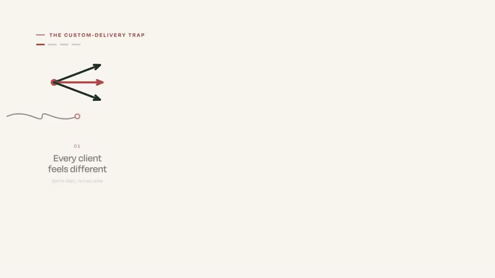
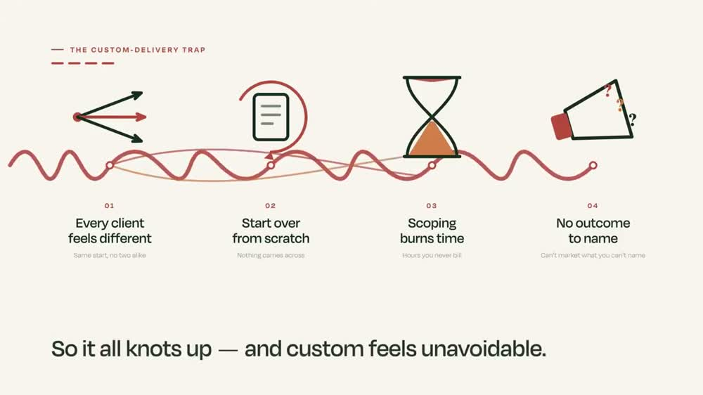
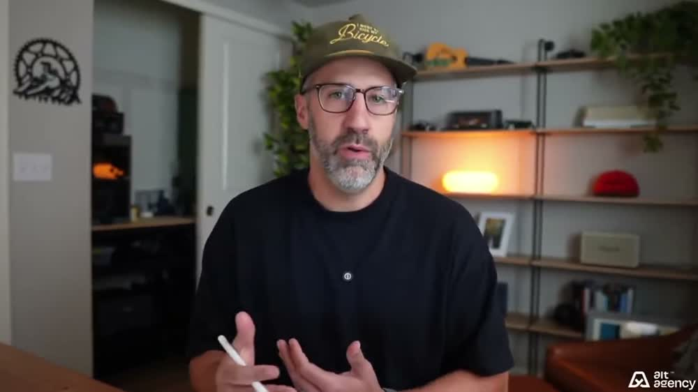
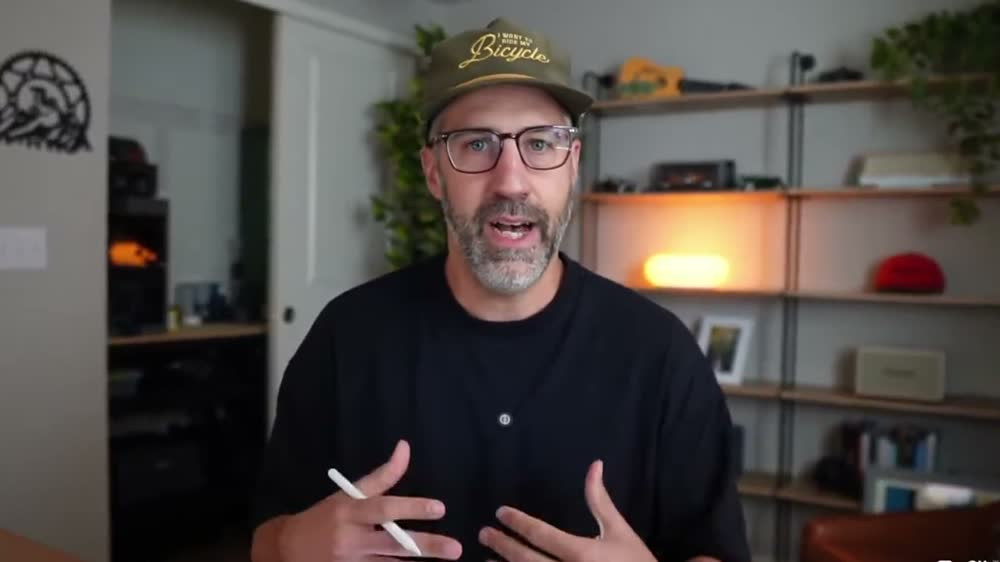
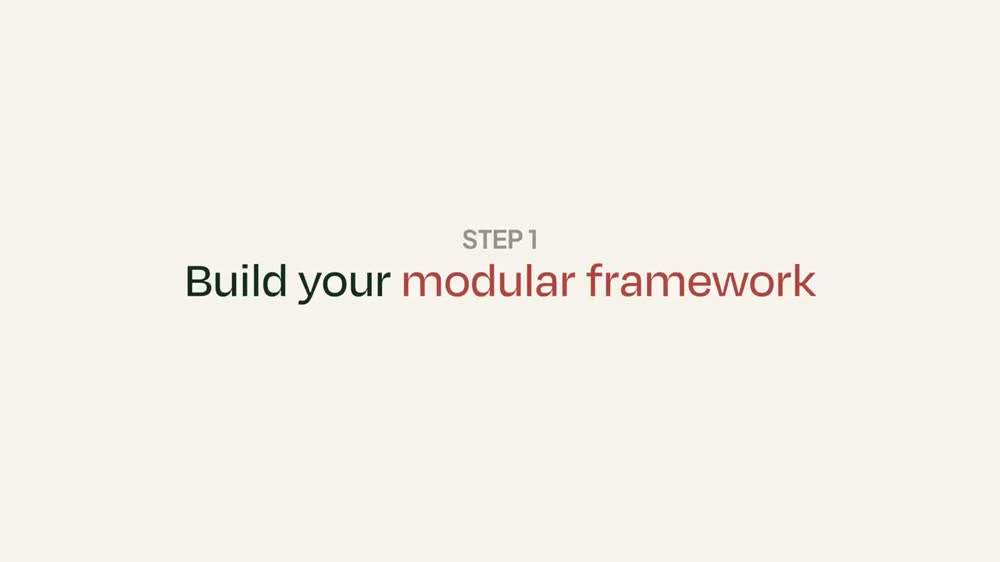

Разбор интро: Greg Hickman, «Как перестать делать каждому клиенту своё»
Автор — Грег Хикман, ведёт англоязычный YouTube-канал для тех, кто продаёт свои услуги
компаниям: консультантов, агентств, специалистов по настройке программ. Ролик про то,
как перестать собирать работу заново под каждого клиента и начать продавать одно и то же
как готовый продукт с фиксированной ценой. Разбирается только интро — первый блок,
где автор ещё не учит, а удерживает зрителя.
Граница интро — 0:53. Три признака совпали. Первый: на 0:53 звучит слово-переключатель
«So, the first step is» — «итак, шаг первый». Второй: время глагола меняется с обещания
(«here's the five steps» — «вот пять шагов») на действие («build your modular framework» —
«соберите свою схему из частей»). Третий: на 0:55 экран впервые за минуту меняется целиком —
появляется полноэкранная карточка «STEP 1». До этого за 53 секунды было всего две смены картинки.
Ролик английский. В левой колонке два слоя: оригинал мелкой строкой и дословный
перевод под ним. В правой — сильный русский: тот же ход автора, пересказанный так,
как он работал бы в посте. Ничего не добавлено — только переформулировано.
Фрагмент — первые две минуты ролика, интро занимает 53 секунды.
Таймкоды в разборе кликабельны: перематывают плеер.
2. Паспорт интро
0:53
длина интро
весь ролик — 16 минут
3
смены картинки
на 1,4 с, 23,1 с и 54,9 с
17,8 с
средний план
в плотных интро 2–4 с — здесь в пять раз спокойнее
191
слово в минуту
у англоязычных ютуберов 180–200 — по верхней границе нормы
170
слов всего
за 53 секунды
4
мысли
законченных смысловых блока
23 с
рисованная схема
почти половина интро — анимация, а не лицо
Главное в цифрах: 191 слово в минуту при трёх сменах картинки за 53 секунды.
Внимание держится не монтажом, а речью — автор говорит быстро и без пауз.
Картинку меняют всего дважды: с рисованной схемы на говорящую голову и обратно на карточку шага.
Первые 23 секунды зритель вообще не видит автора — только линию, которая на глазах запутывается в узел.
3. Цепочка ходов
Боль зрителя вместо приветствия→Цепочка последствий→Клиент, который думал так же→Он уже всё сделал — и всё равно не вышло→Главная мысль одной фразой→Обещание: пять шагов→Карточка первого шага
Три особенности этого захода. Первое: нет ни приветствия, ни имени, ни регалий.
Ролик начинается словами «So, here's the problem» — «итак, вот в чём беда».
Автор появляется в кадре только на 23-й секунде, когда зритель уже согласился с болью.
Второе: доказательство идёт через чужую историю, а не через свои цифры.
Вместо «у меня столько-то клиентов» — конкретный человек по имени Лен и его конкретная работа.
Третье: приём «он уже сделал всё правильно». Лен разложил работу по схемам —
и всё равно упёрся. Значит, дело не в лени зрителя, а в устройстве задачи.
4. Разбор по мыслям
0:00 — 0:19Боль зрителя вместо приветствия178 слов/мин
Оригинал и дословный перевод
So, here's the problem. You probably think that custom delivery is unavoidable because every client probably feels a little bit different. So, that means every engagement starts from scratch. You scope projects, which that turns into a whole time suck, and then you don't actually proactively market yourself because you can't name one specific outcome that you always deliver.
Итак, вот в чём беда. Вы, наверное, думаете, что делать каждому своё — неизбежно, потому что каждый клиент вроде бы немного другой. А значит, каждая работа начинается с нуля. Вы оцениваете объём проектов, и это превращается в сплошную трату времени, а потом вы не занимаетесь продвижением себя, потому что не можете назвать один конкретный результат, который вы выдаёте всегда.
14,8 слова в предложении · 59 слов / 4 предложения
Сильный русский
Клиент приходит — и вы считаете часы заново под его задачу.
Кажется, иначе нельзя: у каждого свои особенности.
Дальше всё идёт по кругу.
Каждый проект начинается с чистого листа.
Вы расписываете объём работ. Эти дни никто не оплачивает.
На рекламу себя времени уже не остаётся.
Сказать нечего: одного результата, который вы выдаёте всегда, у вас нет.
5,6 слова в предложении · 56 слов / 10 предложений

0:03 — заход открывается не лицом, а рисунком: одна мысль на пустом экране, дальше линия достраивается по ходу речи.

0:21 — приём «узел»: к концу блока линия физически запутывается, а подпись подводит итог за зрителя.
0:19 — 0:35Клиент, который думал так же189 слов/мин
Оригинал и дословный перевод
Now, my client Len, he thought the exact same thing. He came to us and he was looking to productize his Zoho CRM implementation work. Now, he mapped everything he has done with his clients in repeatable frameworks, but he was still convinced that each client needed something different.
Так вот, мой клиент Лен думал ровно то же самое. Он пришёл к нам, желая превратить в продукт свою работу по внедрению Zoho CRM. И он расписал всё, что делал с клиентами, в повторяемые схемы, но всё равно был убеждён, что каждому клиенту нужно что-то своё.
16,3 слова в предложении · 49 слов / 3 предложения
Сильный русский
Мой клиент Лен думал так же.
Он настраивает компаниям систему учёта клиентов и сделок — Zoho.
Пришёл к нам за одним. Превратить эту работу в продукт с фиксированной ценой.
Всё, что он делал у клиентов, он уже разложил по повторяемым схемам.
И всё равно был уверен: каждому нужно своё.
8,2 слова в предложении · 49 слов / 6 предложений

0:27 — автор впервые в кадре, на 23-й секунде: лицо появляется только после того, как зритель согласился с болью.
So, here's the big idea. It's not that what they want or what they need actually changed. It's just the order in which you need to deliver your skills and deliverables to get them to the outcome that they actually want.
Итак, вот главная идея. Дело не в том, что меняется то, чего они хотят, или то, что им нужно. Дело только в порядке, в котором вам нужно отдавать свои навыки и результаты работы, чтобы довести их до результата, которого они на самом деле хотят.
13,7 слова в предложении · 41 слово / 3 предложения
Сильный русский
Вот главная мысль.
То, что клиенты хотят, не меняется.
То, что им нужно, не меняется тоже.
Меняется один порядок.
Порядок, в котором вы отдаёте свои навыки и свои работы.
Порядок, который доводит человека до результата, за которым он пришёл.
Больше ничего перекраивать не нужно.
6,3 слова в предложении · 44 слова / 7 предложений

0:38 — на главной мысли картинка не меняется: ставка сделана на речь, темп поднимается до 206 слов в минуту.
So, the first step is to build your modular framework.
Итак, первый шаг — собрать вашу схему из частей.
—
Что изменилось
Обещания кончились, начался первый шаг.
Дальше пойдёт разбор: что вытащить из головы, как это записать, кто по этому работает.
—

0:56 — полноэкранная карточка шага: первая за 53 секунды полная смена картинки, она же метка границы интро.
5. Пост — весь заход связным текстом
Каждому клиенту вы собираете работу заново. Меняется не работа, а порядок
Клиент приходит — и вы считаете часы заново под его задачу.
Кажется, иначе нельзя: у каждого свои особенности. Дальше всё идёт по кругу.
Каждый проект начинается с чистого листа.
Вы расписываете объём работ. Эти дни никто не оплачивает.
На рекламу себя времени уже не остаётся.
Сказать нечего: одного результата, который вы выдаёте всегда, у вас нет.
Мой клиент Лен думал так же. Он настраивает компаниям систему учёта клиентов
и сделок — Zoho. Пришёл к нам за одним. Превратить эту работу в продукт
с фиксированной ценой. Всё, что он делал у клиентов, он уже разложил
по повторяемым схемам. И всё равно был уверен: каждому нужно своё.
Вот главная мысль. То, что клиенты хотят, не меняется.
То, что им нужно, не меняется тоже. Меняется один порядок.
Порядок, в котором вы отдаёте свои навыки и свои работы. Порядок, который доводит
человека до результата, за которым он пришёл. Больше ничего перекраивать не нужно.
Дальше — пять шагов. Клиент получает работу под себя. Вы при этом продаёте
один готовый продукт. Каждое ваше действие собрано заранее.
6. Тезисы пулями
Работа под каждого клиента кажется неизбежной
Причина одна: каждый клиент выглядит немного другим, чем предыдущий.
Из-за этого каждый проект начинается с чистого листа
Расчёт объёма работ съедает дни, которые никто не оплачивает.
На продвижение себя времени не остаётся
И сказать нечего: одного результата, который выдаётся всегда, назвать не получается.
Расписать работу по схемам — ещё не решение
Клиент по имени Лен разложил всё, что делал, по повторяемым схемам и всё равно упёрся.
То, чего клиенты хотят, у всех одинаковое
Меняется только порядок, в котором вы отдаёте им свои навыки и работы.
Ощущение работы под себя и готовый продукт совместимы
Автор обещает показать это за пять шагов.
7. Что видно по картинке
Автора нет в кадре первые 23 секунды. Вместо лица — рисованная линия, которая
достраивается по ходу речи. Знакомство отложено до момента, когда зритель уже кивнул.
Схема рисуется, а не показывается готовой. На 0:03 на экране одна мысль,
на 0:14 — три, на 0:21 — четыре и запутанный узел. Картинка идёт след в след за речью.
Подпись на экране договаривает за зрителя. «So it all knots up — and custom feels
unavoidable» — «всё запутывается, и работа под каждого кажется неизбежной».
Вывод написан буквой, а не оставлен на догадку.
Монтажа почти нет. Три смены картинки за 53 секунды, средний план 17,8 секунды.
Внимание держит темп речи — 191 слово в минуту, верхняя граница нормы для англоязычных
ютуберов (180–200).
Граница интро помечена и словом, и картинкой одновременно. «Первый шаг» в речи
на 0:53 и полноэкранная карточка «STEP 1» на 0:55. Зритель не может пропустить переход.
8. Что заменено в русской версии и почему
«custom delivery is unavoidable» — «делать каждому своё неизбежно» →
«Клиент приходит — и вы считаете часы заново под его задачу». Отвлечённое понятие
заменено сценой из дня читателя, с которой начинается текст.
«turns into a whole time suck» — «превращается в сплошную трату времени» →
«Эти дни никто не оплачивает». Оценка заменена фактом: названо, что именно теряется.
«productize his work» — «превратить работу в продукт» →
«Превратить эту работу в продукт с фиксированной ценой». «Упаковать в продукт»
нельзя увидеть, «продукт с фиксированной ценой» можно.
«Zoho CRM implementation work» — «работа по внедрению Zoho CRM» →
«Он настраивает компаниям систему учёта клиентов и сделок — Zoho». Название чужой
программы расшифровано тем, что она делает.
«give your clients a customized experience» — «дать клиентам ощущение работы под них» →
«Клиент получает работу под себя». Калька с английского заменена русской фразой.
Одно предложение на 21 слово в блоке про пять шагов → четыре коротких.
Обещание распалось на «что получит клиент» и «что получите вы».
Перечисление последствий внутри одной фразы на 59 слов → четыре пули.
Каждую можно прочитать отдельно от соседних и понять.
Средняя длина предложения упала во всех четырёх блоках: с 13,7–21,0 слова до 5,2–8,2.
Объём содержания не срезан: 170 слов в оригинале и 170 слов в пересказе.
Цепочка ходов автора не менялась — боль, последствия, история клиента, главная мысль,
обещание пяти шагов остались на своих местах и в том же порядке.